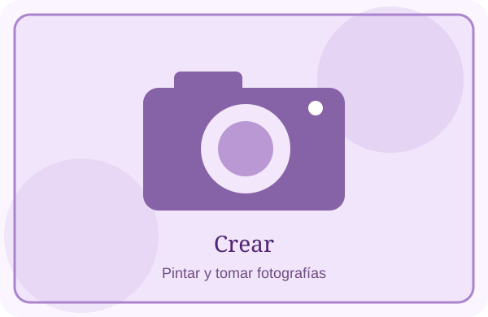
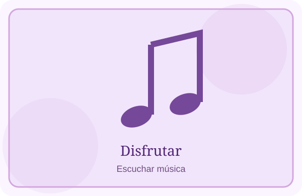

En mi tiempo libre me gusta escuchar música, pintar y tomar fotografías. Son actividades que disfruto y que puedo hacer a mi ritmo.


Pintar me permite usar mi creatividad, tomar fotos me ayuda a guardar recuerdos y la música me acompaña en muchos momentos del día.